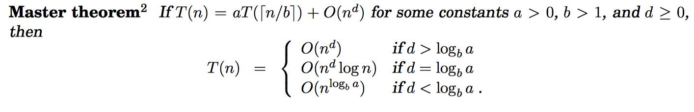
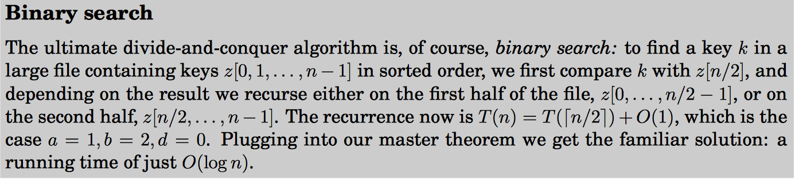
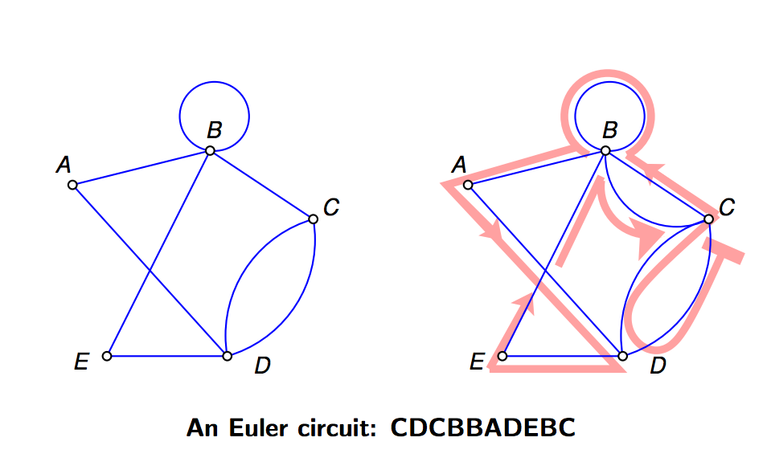
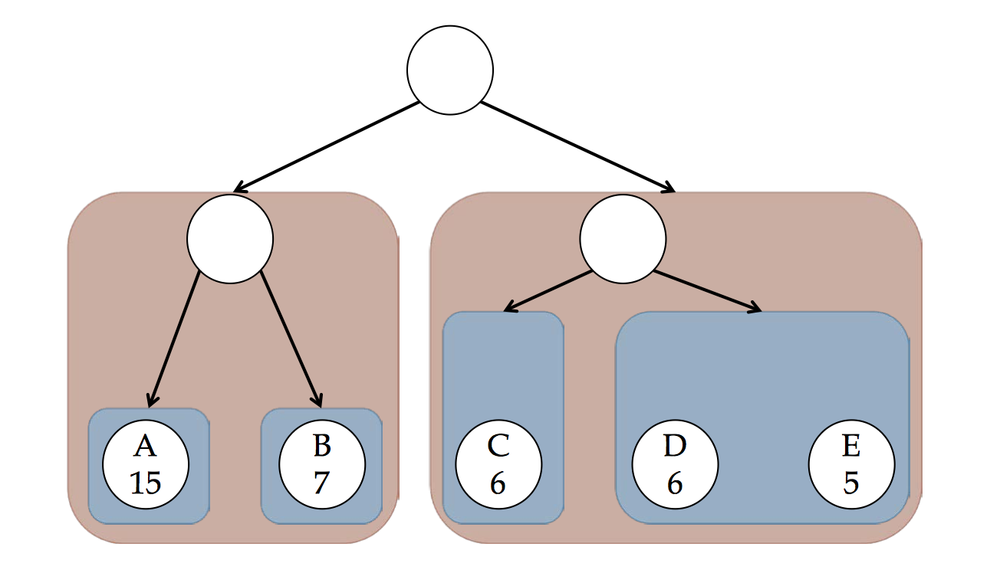
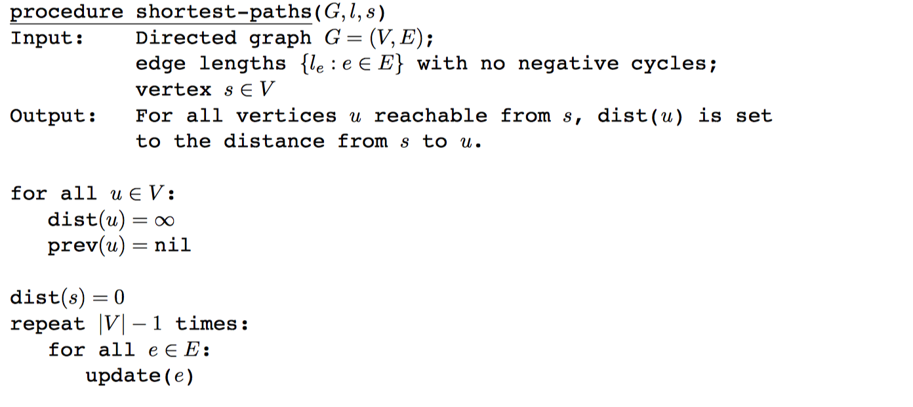

Brute-force algorithm
Brute-force search or exhaustive search, also known as generate and test, is a very general problem-solving technique that consists of systematically enumerating all possible candidates for the solution and checking whether each candidate satisfies the problem's statement.
Big O theta & big-omega
means that the growth rate of f(x) is asymptotically less than or equal to to the growth rate of
means that the growth rate of f(x) is asymptotically greater than or equal to the growth rate of
means that the growth rate of f(x) is asymptotically equal to the growth rate of
heap (data structure)
A heap can be classified further as either a "max heap" or a "min heap". In a max heap, the keys of parent nodes are always greater than or equal to those of the children and the highest key is in the root node.
Matrix
adjacency matrix
Space Complexity:
an adjacency matrix is a square matrix used to represent a finite graph. The elements of the matrix indicate whether pairs of vertices are adjacent or not in the graph.

incidence matrix
Space Complexity:
an incidence matrix is a matrix that shows the relationship between two classes of objects.
Recurrence relations


Priortiy Queue
a priority queue is an abstract data type which is like a regular queue or stack data structure, but where additionally each element has a "priority" associated with it. In a priority queue, an element with high priority is served before an element with low priority. If two elements have the same priority, they are served according to their order in the queue.
Euler Paths & Euler Circuit
An Euler path is a path that uses every edge of a graph
exactly once.
An Euler circuit is a circuit that uses every edge of a graph
exactly once.
An Euler path starts and ends at different vertices.
An Euler circuit starts and ends at the same vertex


Data Compression
Huffman encoding

Cost in bits per symbol
- The data to be stored is called a message
- Each letter to be encoded is called a symbol
- Each bit pattern for each symbol is called a codeword
- A collection of codewords forms a codes
- We talk about “sending a message” and “storing some data” interchangeably. Storing data is just like sending it to disk.
- The cost of a code can be measured in bits-per-symbol, bps, for a particular message: total bits divided by the number of symbols
- ASCII always has the cost of 8 bps
Shannon-Fano coding

Shannon's entropy
If a symbol occurs with probability
Shannon’s entropy theorem:
Given a message with n symbols each occurring p i times, the best bps possible is
Graph
DAG (Directed acyclic graph)
a finite directed graph with no directed cycles
SCC Strongly Connected components
For each vertex in SCC, there is a path to any other vertex in the SCC
Source: a vertex with no incoming edges
Sink: a vertex with no outgoing edges
BFS Breath-fisrt Search

Complexity:
DFS Depth-first Search
Complexity:
Pseudo code
traverse(v):s = stacks.push(v)while s not empty:v = s.pop()mark v visitedfor each w adjacent to v:if w not visited:s.push(w)
DFS Edge Classification

Pre and Post Number in DFS
Example
Greedy Algorithms Definition
A greedy algorithm is an algorithm that follows the problem solving heuristic of making the locally optimal choice at each stage with the hope of finding a global optimum.
Kruskal's Algorithm

KRUSKAL(G):A = ∅foreach v ∈ G.V:MAKE-SET(v)foreach (u, v) in G.E ordered by weight(u, v), increasing:if FIND-SET(u) ≠ FIND-SET(A = A ∪ {(u, v)}UNION(u, v)return A
Prim's Algorithm
Mimum spanning tree

Complexity
Where E is the number of edges in the graph and V is the number of vertices, Kruskal's algorithm can be shown to run in O(E log E) time, or equivalently, O(E log V) time, all with simple data structures.
Dijkstra's Algorithm (find shortest path)
Complexity: O((V+E)log V)
Bellman-Ford algorithm
find shortest path when negative edge exists

Knapsack Problem
Disjoint Set
It is a data structure that keeps track of a set of elements partitioned into a number of disjoint (nonoverlapping) subsets.
- Find: Determine which subset a particular element is in.
- Union: Join two subsets into a single subset.


Complexity
- makeset
O(1) - find worst
O(V) - union
O(1)
Kahn's Algorithm
function toposort_kahninput: V and E in graph G (a dag)output: x - the topological sorted verticesq = a queue with all vertices having no incoming edge // O(V)x = an empty linked listwhile q is not emptyv = q.dequeue() // O(1) * O(V) timesx.append(v) // O(1) * O(V) timesfor e, u in outgoing edges of v such that e(v,u)delete e // O(1) * O(E) timesif u doesn't have any incoming edge // O(1) * O(E) timesq.enqueue(u) // O(1) * O(E) timesvia Xiao Liang Yu
Complexity
Time Complexity:
Comparison Sort
A comparison sort is a type of sorting algorithm that only reads the list elements through a single abstract comparison operation (often a "less than or equal to" operator or a three-way comparison) that determines which of two elements should occur first in the final sorted list.
Hashing
Secret Sharing
Dynamic Programming
RSA
c = encrypted data
d = private key
n = public key
Decrypted Data =
Number Theory
Modular arithmetic
(A
(A + B) mod C = (A mod C + B mod C) mod C